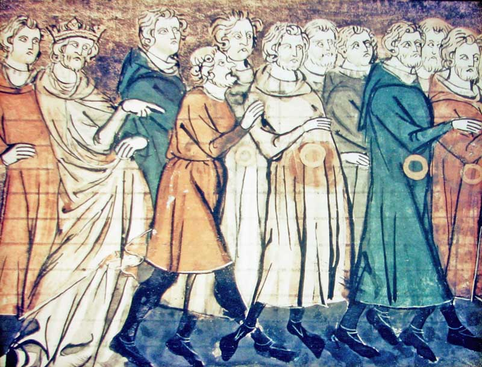
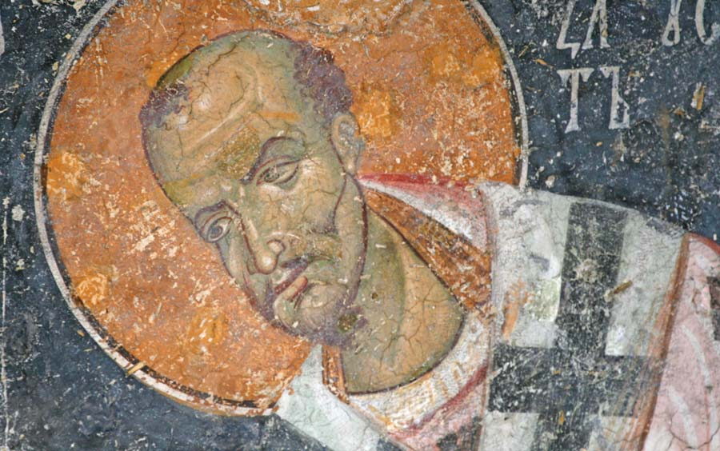
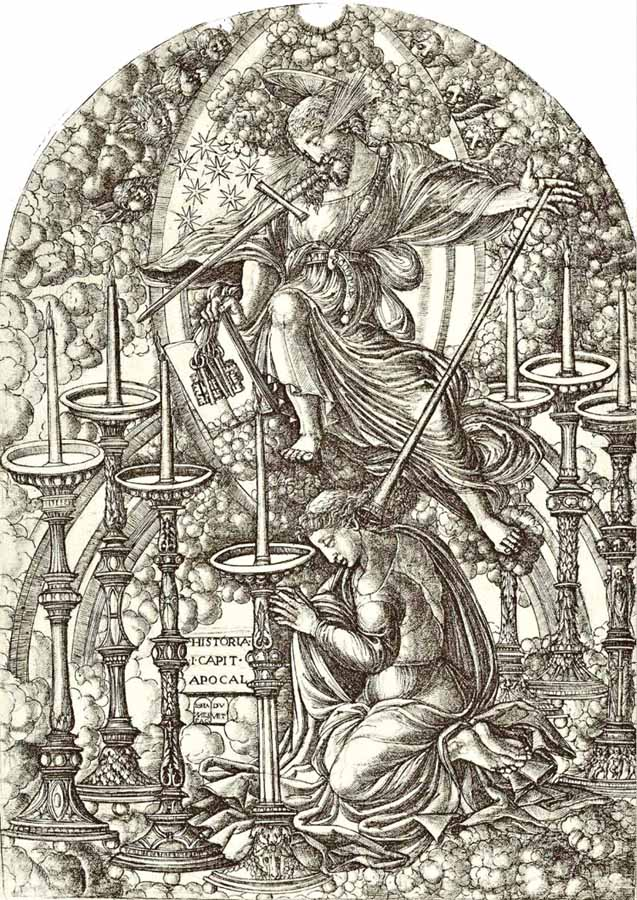
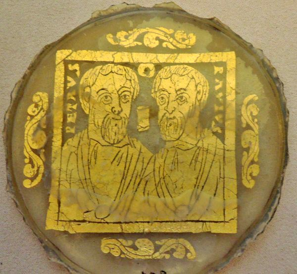
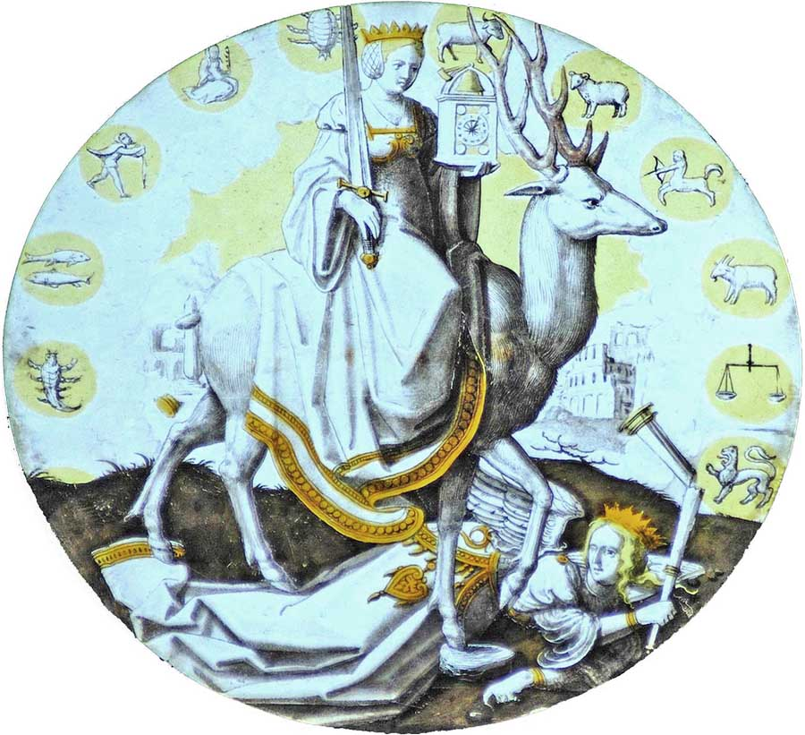
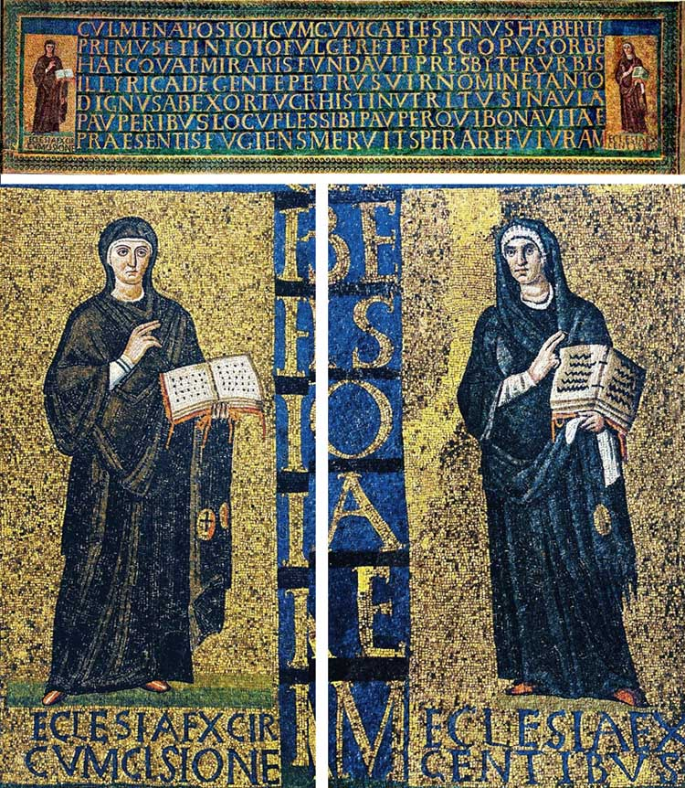

Israel and the Church. First Love
Those were blessed times of the building up of the body of the Messiah, when two olive trees were being built up and strengthened in harmony, when the Community of God consisted of two peoples, Jews and Greeks, living in love with one another.
Author: Ephraim Kalish
Song 6:13: "Return, return, O Shulamite; return, return, that we may look upon thee." More precisely, this text should be translated from the Hebrew as: "Turn, come back, Shulamit…!"

Where is Shulamit called to return to? God wants her to return to her name (Shulamit, in Hebrew: Fullness, Perfection), to become the Bride whom the Most High prepared for Himself from the beginning. That is one possible interpretation of this passage. God wants her to return to what was conceived and created from the beginning, what was born of the Spirit of God. (For more on this, see the article "Shulamit. The Dance of Two Camps".)
I think this is a prophecy of what began to come true immediately after the death on the cross and the resurrection of Messiah Yeshua and the outpouring of the Spirit of God on all flesh. Those were blessed times of the building up of the Body of the Community of God, which had fullness in itself, when two olive trees were being built up and strengthened in harmony, when the Community of God consisted of two peoples, Jews and Greeks, living in love with one another.
But already in the second half of the 1st century AD a serious problem appears between the brothers, Jews and Greeks, joined in one body of the Messiah. We can judge it from the letters of the same Paul. Remember: "…and thou, being a wild olive tree… boast not…" (Rom. 11:17–18), and "I would not, brethren, that ye should be ignorant of this mystery, lest ye should be wise in your own conceits…" (Rom. 11:25), and so on. In the letters to the seven churches in the Book of Revelation, the Lord rebukes the Church over this same problem.
The interpretation of a passage of Revelation that I want to share may be received in different ways. I will not insist on the final truth of my version. Do not believe my words. Believe the Scriptures and God.
"Thou hast left thy first love"
Rev. 2:1–5: "Nevertheless I have somewhat against thee, because thou hast left thy first love." I think the same thing is meant here as in the letters of Paul quoted above. God accuses the Church from the nations of breaking off its relationship with the Community of believers from the Jews: "thou hast left thy first love".

What first love is the Spirit speaking of here? There may be two possibilities. In any case, the Messiah speaks of two loves: love for God and love for one's brother (neighbour). "On these two commandments hang all the Torah and the Prophets." In the end they merge into a single love for God: it is impossible to love God and hate one's brother. Though perhaps it is possible. Here is a textbook example of such selfless love for the Creator: John Chrysostom. There is no doubt that he laboured much for the name of the Most High and, I think, loved Him with all his heart and mind, but at the same time he was a terrible antisemite, that is, he sincerely hated his brother. I think you can give other such examples yourselves. Perhaps foreseeing this, Yeshua stresses the importance of both loves.
Rev. 2:4 speaks of love for one's brother!
Now let me explain my point of view. Why do I think that Rev. 2:4 speaks not so much of love for God as of love for one's brother?
It is important here to understand the main idea of the letter to the church in Ephesus. That will give us the key to understanding the charges brought against it. The names of the Most High serve as a hint. You will have noticed that each of the letters to the seven churches is introduced by one of His names. Throughout the Bible, in the TANAKH and in the New Testament, God calls Himself by many names. The name of the Most High used in each particular case is probably not chosen by chance. It reveals the essence of what God is doing. For example, Adonai Rofe (the God who heals), or Shomer Yisrael (the Keeper of Israel), or Adonai Tseva'ot (the LORD of Hosts), and so on.
The Book of Revelation begins with God speaking His various names seven times, names that are one. And the same name introduces the first letter of the list.
Rev. 1:8–17
8 I am Alpha and Omega, the beginning and the ending, saith the Lord, which is, and which was, and which is to come, the Almighty (this is how the four-letter NAME is unfolded: hoveh, hayah, yihyeh, יהוה, "the LORD", and also "I am the One you need").
…
10 I was in the Spirit on the Lord's day (Shabbat), and heard behind me a great voice, as of a trumpet, 11 saying, I am Alpha and Omega, the first and the last (I am ALL, fullness).
…
12 And I turned to see the voice that spake with me. And being turned, I saw seven golden candlesticks; 13 and in the midst of the seven candlesticks one like unto the Son of man…
…
16 And he had in his right hand seven stars…
17 …I am the first and the last.

SEVEN times in Rev. 1:8–17 the Lord calls Himself by names that in one way or another express FULLNESS. The number seven is stressed here many times as well: the seven spirits, the seventh day, Shabbat (the Lord's day), the seven stars, the seven lampstands, the seven churches, repeated again and again in this chapter. Seven, seven, seven, many times over… In Jewish tradition 7 is the number of fullness and perfection.
With the same name God introduces the first letter, to the church in Ephesus: "…These things saith he that holdeth the seven stars in his right hand, who walketh in the midst of the seven golden candlesticks" (Rev. 2:1). "He that holdeth the seven stars in his right hand", that is, the One who holds everything (seven, fullness) in His hand. And "who walketh in the midst of the seven golden candlesticks", that is, the Most High dwelling in the fullness of the church (in the midst of the seven lampstands).
So the key to understanding our verse about love is the name of the Most High connected with FULLNESS. We may suppose that when the leaving of the first love is spoken of, God is declaring a breach of God's FULLNESS in the Church. This fullness was laid down from the beginning. It was God's supernatural gift to the Church. He poured out love between the brothers. And Gentiles who only yesterday hated the Jews were today aflame with love for their Jewish brothers. The Book of Acts bears witness to this: they gathered generous offerings for the saints in Jerusalem, for example (about the "natural" hatred of the surrounding peoples for the Israelites, see the testimony of Josephus in "The Jewish War").

"But you have left your love for your Jewish brother, the one who brought you the light of the gospel, revelation, knowledge of the truth, eternal life. You have rejected him, driven him out!" That is the meaning of the charge against the church in Ephesus. It is no accident that God addresses this message in the very first of the letters. In His eyes, probably, fullness is the foundation of the growth and flourishing of the Community of God, "the fulness of him that filleth all in all".
There is one more detail that points, in our case (Rev. 2:1–5), to love for one's brother and not for God: "I know thy works, and thy labour, and thy patience… and hast borne, and hast patience, and FOR MY NAME'S SAKE hast laboured, and hast not fainted" (Rev. 2:2–3). One can labour and not faint FOR THE SAKE OF THE LORD'S NAME only if one loves God!
"Nevertheless I have somewhat against thee, because thou hast left thy first love" (Rev. 2:4). What is meant is NOT that the church, in its ERROR, did many works of God thinking it was doing them out of love for Him (Chrysostom too sincerely loved the Father but hated his brother). GOD Himself clearly testifies to it: "I KNOW thy works… thou hast laboured and hast not fainted FOR MY NAME'S SAKE." That is: I am witness, you love Me, you have proved it by your works.

"Nevertheless I have somewhat against thee, because thou hast left thy first love": God accuses the Church of having lost its fullness. It rejected the Jews: the grafted branches rejected the tree. They began to boast over the olive tree. The branches proclaimed themselves the whole tree (the fullness), while in reality they were only a part grafted into it. The fullness that was in the first love was the "golden age" of the church, when the apostles were still alive and in it there lived together in love the disciples of Yeshua: Jews who kept the Law, and disciples of the Messiah who had come to faith from the nations.
Why does such an understanding of this passage matter?
Because it shows a clear way of correction, of restoring God's fullness in the Church:
"Remember therefore from whence thou art fallen, and repent, and do the first works; or else I will come unto thee quickly, and will remove thy candlestick out of his place, except thou repent" (Rev. 2:5).
We spoke of this at the very beginning: "Return, Shulamit (the Bride of the Lord), to your name, Fullness (Perfection). Return to the state in which you were conceived and created from the beginning"; remember from where you have fallen.
A few words about first love
If I speak of my blessed wife, I love her much more now than at the beginning. My love for her has become more precious and deeper. This is quite normal if a family lives in God and in His love. I would not want to go back to first love; it was immature, superficial… Although, yes, there was a lot of adrenaline and all that…
It is natural that first love for God and first love for one's neighbour are in many ways self-interested. Look, for example, at a baby's love for its mother: warmth, caresses, food, protection, dry nappies, that is what first love for our mother is. Such love cannot yet be called perfect. Why then does God insist that the church in Ephesus (and in it the whole Church is meant) return to a first love that is far from perfect?

The first love of the disciples from the nations for their Jewish brothers was probably not perfect either. The Jews brought them healing, deliverance, the warmth and light of the Word of the Most High. But the first love of the Greek church was replaced not by a more perfect love but by envy; respect and gratitude were replaced by the believers' boasting, pride and hatred towards their Jewish brothers.
That is why God insists that we return to the step we once climbed, when we took the brotherly hand held out to us, holding not a stone but bread. This love, of course, needs to develop and grow. But for that we must return to the beginning, restore what was destroyed, so that it becomes possible to climb the next steps.
Today, all over the face of the earth, God is putting a supernatural love for Israel into the hearts of churches and individual believers, even where no one has ever seen a living Jew. This is the fulfilment of what is written in Revelation and in many prophets: the return to first love. Blessing and fullness are coming to these nations…
Interestingly, in 1960, at the demand of the Pope (Angelo Giuseppe Roncalli, who in 1958 became Pope of Rome under the name John XXIII), the curses against the Jews were removed from the prayer read on Good Friday (in the practice of the Orthodox Church they remain to this day). The Pope composed his own prayer: "We are conscious today that many centuries of blindness have covered our eyes so that we can no longer see the beauty of Thy chosen people nor recognise in their faces the features of our privileged brethren. We realise that the mark of Cain stands upon our foreheads. Across the centuries our brother Abel has lain in the blood which we drew, or shed the tears we caused by forgetting Thy love. Forgive us for the curse we falsely attached to their name as Jews. Forgive us for crucifying Thee a second time in their flesh. For we knew not what we did."